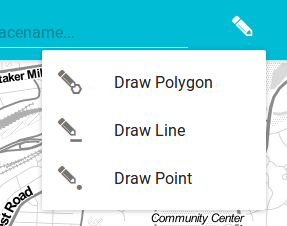
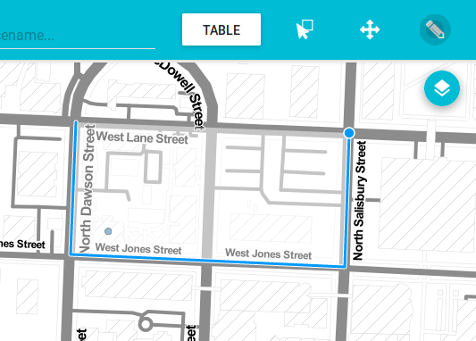
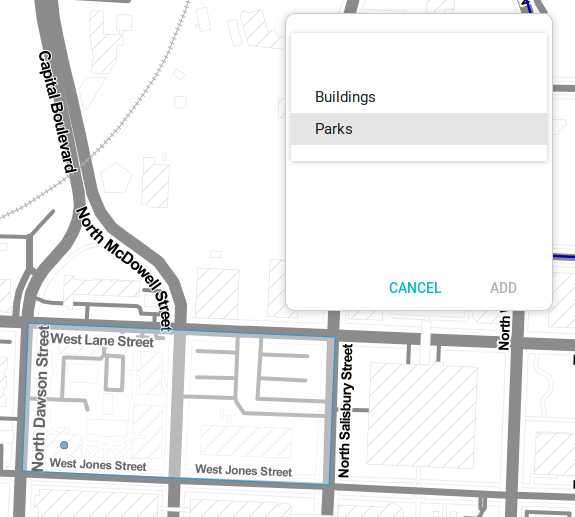
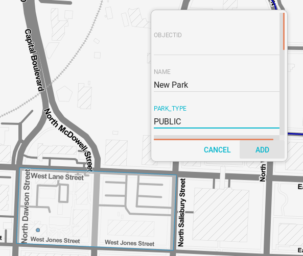

The Draw Feature allows you to add new features to existing vector layer, as long as they have been configured for that purpose.
To add a new feature in any layer, click the Draw Features button and select the type of geometry you wish to create.
Then, click the map canvas to add vertexes to the feature. For polygons and lines geometries, you must add several vertexes. Double-click to add the last vertex and finish drawing.
Once the drawing is finished, the attributes dialog shows, where you can edit the new feature's attributes. Select the layer that you want to assign the feature to. Only layers with the same geometry type as the drawn geometry will show in the drop-down list.
Once the layer is selected, you can edit the attributes of the new feature. Click Add to save the attributes and the geometry and add it to the designated layer. Clicking Cancel will discard both the attributes and the geometry changes, and no feature is added.
